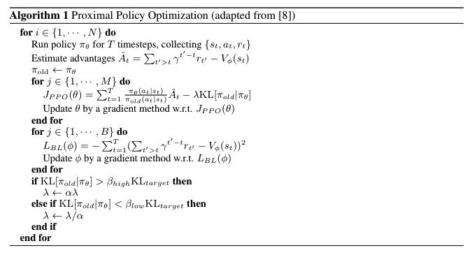
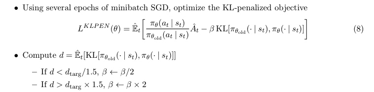
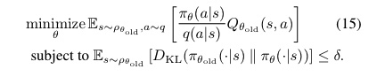
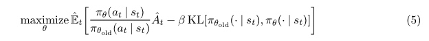
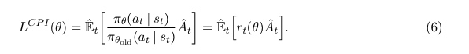
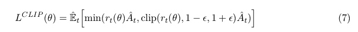
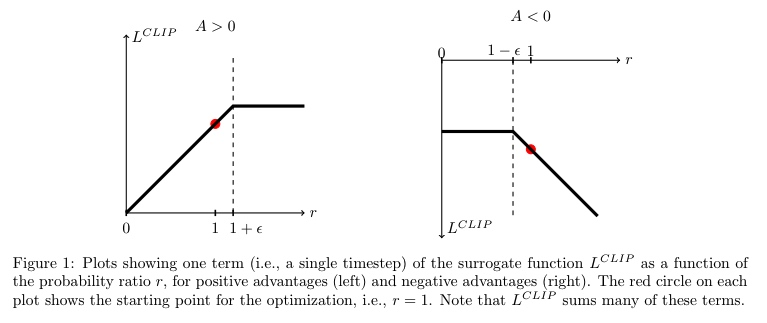

PPO
PPO一共有两种算法，分为PPO1和PPO2，文章全名为《Emergence of Locomotion Behaviours in Rich Environments》和《Proximal Policy Optimization Algorithms》，下面将分别进行介绍。
PPO1
策略梯度评估有固有的缺点：例如高方差，对一些超参数比较敏感等。TRPO是一种有效的解决办法，通过采用限制的信任区域约束，PPO1算法是TRPO算法的一个近似的版本，它不像TRPO需要计算共轭梯度，PPO1仅仅依赖于一阶梯度。算法的原理，就是在目标函数后接上一个约束KL散度，来保证和的相似性，这个约束就像深度强化学习中的正则化项。
算法框图如下：

在算法1中，超参数是每次迭代策略中的期望变化。如果策略中的实际变化明显低于或超过，则缩放项控制正则化系数的调整。
在《Proximal Policy Optimization Algorithms》中，也提到了自适应KL惩罚系数。

PPO2
TRPO使用的是硬约束

证明 TRPO 合理性的理论实际上建议使用惩罚而不是约束，来解决无约束优化问题。

为什么TRPO不采取惩罚项呢，原因是因为很难选择在不同问题中表现良好的单个值，甚至在单个问题中，特征在学习过程中发生变化。实验表明，简单地选择 一个固定惩罚系数 β 并用 SGD 优化惩罚客观方程是不够的，需要额外的修改。
让表示可能性比率,,TRPO最大化这个“代理“目标为：

如果没有限制， 的最大化将导致策略更新过度;所以现在考虑如何修改目 标，惩罚将从 1移开的策略的变化。
现在的目标函数变为：


这个式子其实是希望和差距不要太大，当时，代表当期的动作是好的，这时候希望越大越好，但是由于不希望和差距太大，所以有一个上界，即1+，如图1左所示。同理，若，则说明当前的动作不好，所以希望越小越好，但是有一个下界，即1-，如图1右所示。
参考
[1]Heess N, TB D, Sriram S, et al. Emergence of locomotion behaviours in rich environments[J]. arXiv preprint arXiv:1707.02286, 2017. [2]Schulman J, Wolski F, Dhariwal P, et al. Proximal policy optimization algorithms[J]. arXiv preprint arXiv:1707.06347, 2017.